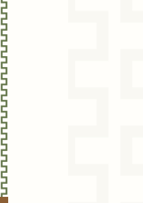
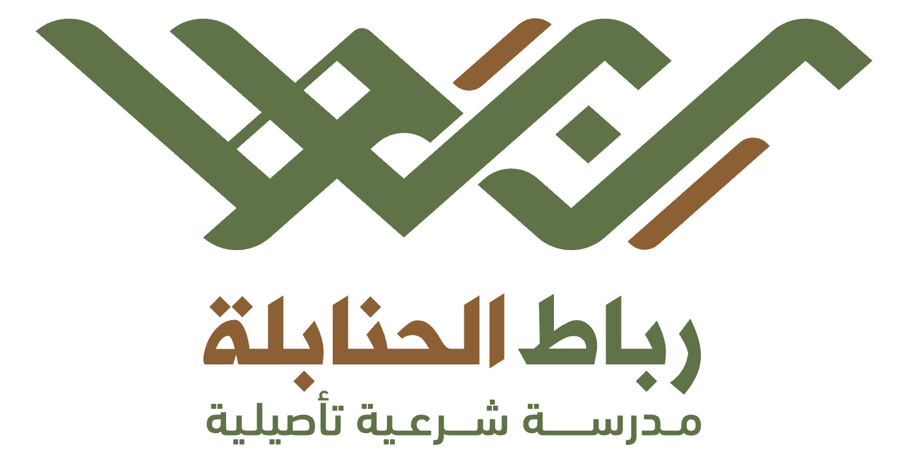

بسم الله الرحمن الرحيم
الحمد لله والصلاة والسلام على رسول الله ﷺ، وعلى آله وصحبه ومن استن بسنته إلى يوم الدين، أما بعد:
فقد درست عندي الأخت الفاضلة:
مجيدة عبد الحليم السويد
دورة في شرح كتاب «نواقض الإسلام» للإمام المجدد المصلح محمد بن عبد الوهاب رحمه الله (١٢٠٦هـ)، والذي أرويه إجازة عن الشيخ عبد الله بن حمود التويجري، عن والده الشيخ حمود بن عبد الله التويجري، عن القاضي عبد الله بن عبد العزيز العنقري، عن الشيخ محمد بن إبراهيم بن محمود النجدي، عن الشيخ عبد الله أبي بُطين، عن الشيخ حمد بن معمَّر، عن شيخ الإسلام محمد بن عبد الوهاب.
(ح) ويرويه الشيخ عبد الله العنقري، عن الشيخ سعد بن حمد بن عتيق، عن الشيخ أحمد بن إبراهيم بن عيسى، عن الشيخ عبد الرحمن بن حسن، عن شيخ الإسلام محمد بن عبد الوهاب.
(ح) وأرويه عن شيخي الشيخ عبد الله بن عبد العزيز بن عقيل الحنبلي رحمه الله إجازة، عن الشيخ محمد بن سعيد النجدي ثم المكي، عن الشيخ سعد بن عتيق، عن الشيخ أحمد بن إبراهيم بن عيسى، عن الشيخ عبد الرحمن بن حسن، عن شيخ الإسلام محمد بن عبد الوهاب.
وقد أجزت المذكورة بالكتاب إجازة خاصة بالشرط المعتبر عند أهل العلم، وأوصيها بتقوى الله تعالى، والاستزادة من العلم والعمل، والله ولي التوفيق.
بسم الله الرحمن الرحيم
الحمد لله والصلاة والسلام على رسول الله ﷺ، وعلى آله وصحبه ومن استن بسنته إلى يوم الدين، أما بعد:
فقد درس عندي الأخ الفاضل:
عبد الرحمن بن محمد الفهد
دورة في شرح كتاب «القواعد الأربع» للإمام المجدد المصلح محمد بن عبد الوهاب رحمه الله (١٢٠٦هـ)، والذي أرويه إجازة عن شيخي الشيخ عبد الله بن عبد العزيز بن عقيل الحنبلي رحمه الله، عن الشيخ محمد بن سعيد النجدي ثم المكي، عن الشيخ سعد بن حمد بن عتيق، عن الشيخ عبد الرحمن بن حسن، عن شيخ الإسلام محمد بن عبد الوهاب.
وقد أجزت المذكور بالكتاب إجازة خاصة بالشرط المعتبر عند أهل العلم، وأوصيه بتقوى الله تعالى، والاستزادة من العلم والعمل، والله ولي التوفيق.
بسم الله الرحمن الرحيم
الحمد لله والصلاة والسلام على رسول الله ﷺ، وعلى آله وصحبه ومن استن بسنته إلى يوم الدين، أما بعد:
فقد درست عندي الأخت الفاضلة:
مجيدة عبد الحليم السويد
دورة في شرح كتاب «الأربعين النووية» للإمام محيي الدين يحيى بن شرف النووي رحمه الله (٦٧٦هـ)، والذي أرويه إجازة عن الشيخ عبد الله بن حمود التويجري، عن والده الشيخ حمود بن عبد الله التويجري، عن القاضي عبد الله بن عبد العزيز العنقري، عن الشيخ محمد بن إبراهيم بن محمود النجدي، عن الشيخ عبد الله أبي بُطين، عن الشيخ حمد بن معمَّر، بسنده المتصل إلى المصنف رحمه الله.
(ح) ويرويه الشيخ عبد الله العنقري، عن الشيخ سعد بن حمد بن عتيق، عن الشيخ أحمد بن إبراهيم بن عيسى، عن الشيخ عبد الرحمن بن حسن، بسنده المتصل إلى المصنف رحمه الله.
(ح) وأرويه عن شيخي الشيخ عبد الله بن عبد العزيز بن عقيل الحنبلي رحمه الله إجازة، عن الشيخ محمد بن سعيد النجدي ثم المكي، عن الشيخ سعد بن عتيق، عن الشيخ أحمد بن إبراهيم بن عيسى، عن الشيخ عبد الرحمن بن حسن، بسنده المتصل إلى المصنف رحمه الله.
(ح) وأرويه عن الشيخ عبد العزيز بن عدنان العيدان، عن الشيخ عبد الله بن عبد العزيز بن عقيل، عن الشيخ عبد الله بن محمد بن حميد، عن الشيخ سعد بن حمد بن عتيق، بسنده المتصل إلى المصنف رحمه الله.
(ح) وأرويه عن الشيخ عبد الله بن محمد بن حميد، عن الشيخ محمد بن عبد اللطيف آل الشيخ، عن الشيخ عبد الرحمن بن حسن، عن الشيخ عبد الله أبي بُطين، بسنده المتصل إلى المصنف رحمه الله.
(ح) وأرويه عن الشيخ عبد الرحمن بن ناصر البراك، عن الشيخ عبد العزيز بن عبد الله بن باز رحمه الله، عن الشيخ محمد بن إبراهيم آل الشيخ، عن الشيخ سعد بن حمد بن عتيق، بسنده المتصل إلى المصنف رحمه الله.
(ح) وأرويه عن الشيخ عبد الله بن عبد الرحمن بن جبرين رحمه الله، عن الشيخ عبد العزيز بن عبد الله بن باز، عن الشيخ محمد بن عبد اللطيف آل الشيخ، بسنده المتصل إلى المصنف رحمه الله.
(ح) وأرويه عن الشيخ حمود بن عبد الله التويجري، عن الشيخ عبد الله بن محمد بن حميد، عن الشيخ عبد الرحمن بن حسن، بسنده المتصل إلى المصنف رحمه الله.
(ح) وأرويه عن الشيخ أنس بن عادل اليتامى، عن الشيخ عبد الله بن عبد العزيز بن عقيل، عن الشيخ محمد بن سعيد النجدي ثم المكي، عن الشيخ سعد بن حمد بن عتيق، بسنده المتصل إلى المصنف رحمه الله.
وقد أجزت المذكورة بالكتاب إجازة خاصة بالشرط المعتبر عند أهل العلم، وأوصيها بتقوى الله تعالى، والاستزادة من العلم والعمل، والله ولي التوفيق.